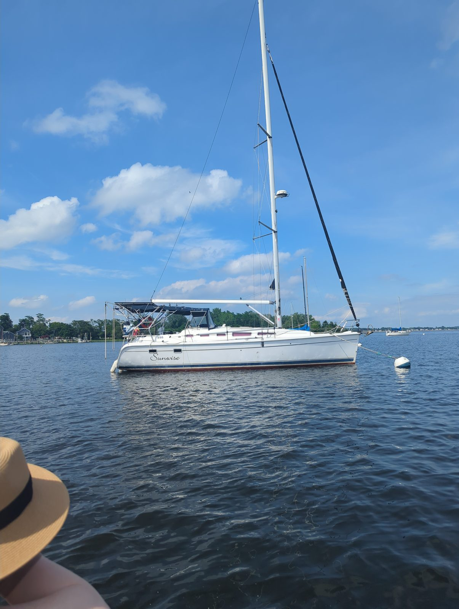

East Greenwich, RI
Where we load 400 lbs of snacks onto the boat and immediately worry it isn't enough. Greenwich Cove, top of Narragansett Bay.
Where we start
"Sunwise" lives on a mooring at Greenwich Cove Marina (3 Division St). Dinghy ashore there, or at the town dock / Scalloptown Park — from either it's a short, flat-then-uphill walk into town. This is home base: load up and shove off.
Walk from the dock (all under 10 min)
- Main Street — one block up the hill: coffee, breakfast, and the last proper grocery/liquor run before the islands. Do your provisioning here.
- The waterfront restaurants on Water Street — oysters and a drink with the boats in view, right by the landing.
- Greenwich Cove stroll — flat walk along the marinas to shake out the legs before the first leg.

Skipper's notes: Home mooring is at Greenwich Cove Marina (3 Division St) — that's where "Sunwise" sits. Dinghy ashore to the marina or the town dock. Last real provisioning before the islands; stock up on Main St.
Next leg → East Greenwich to Newport, ~4 hr down the West Passage and round into the East Passage. Mostly protected water — a good warm-up sail.